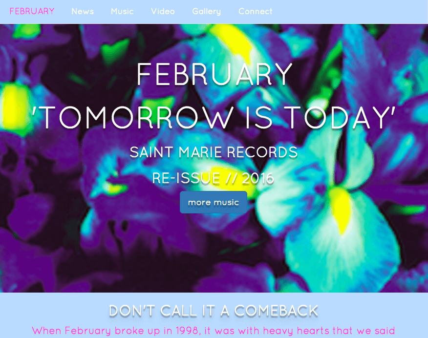

Goals
To achieve greater proficiencies in:
- Industry best practices
- Development languages and tools
- Effective workflows for group and individual projects
Current Skills
Beginner level:
- HTML
- CSS
- JavaScript
- Git
- WordPress
- Photoshop
- SourceTree
Work Examples
February Website
Ongoing build to apply skills learned in HTML, CSS, and JavaScript with Girl Develop It.
Affiliations
Girl Develop It, Twin Cities
Will complete their Front End Developer Series, December 2015.
Women Who Code, Twin Cities
Work Experience
Freelance Singer
Twin Cities
1994-Present
- Sing on national and international commercials (over 30 to date).
- Have performed live and on recordings with various musicians such as Dan Wilson, Mike Doughty, and Astronaut Wife.
- Currently sing with the band Ice Palace.
Music Teacher/Camp Development
St. Luke Fine Arts and Nature Camp
2011-2015
- Wrote and taught original music to groups of kids age 5-15.
- Assisted in program development and yearly theme creation and implementation.
- Assistant direction of annual final performance of 60 kids.
Assistant Producer
Asche and Spencer Music
1998-2000
- Partnered with ad agencies to provide original music for their clients’ commercials.
- Assisted with budget management, research, data archival, and executive assistance.
- Hosted clients for recording sessions and moderated feedback.
Executive Assistant and Production Assistant
Music Matters
1996-1998
- Personal assistant to Executive Director of multi-faceted environmental event company.
- Creation of large-scale concerts, events, and on the ground production management to meet companies specific needs.
- Budget preparation and oversight, talent buying, permit securing, event logistics, and artist liaison services for events of up to 20,000 people.
Volunteering (Past and Present)
- Hennepin County Library
- People Serving People
- Stages Theater
- Matter
- CitySongs
- St. Luke Presbyterian Church
- Murray Middle School, Chelsea Heights School, and Groveland Elementary School:
PTA leadership and committee leader for fundraising events.
References
Polly Cashen
IT Manager, Research Support Systems
Office of the Vice President for Research
University of Minnesota
Email: peter362@umn.edu